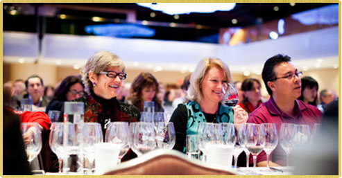

A joyous three-day festival of great wine.
$2,495 per person.(Complete Weekend Program)
Order tickets

A unique opportunity to taste the world’s finest wines
The New York Wine Experience is a joyous three-day celebration of great wine. Only at a Wine Experience can you sit down and taste the world’s best wines guided by the estates’ owners and winemakers. You’ll enjoy outstanding vintages, rare wines from the producers’ cellars and top-scoring wines from around the world.
We have planned a weekend program that will engage all of your senses while adding to your wine knowledge. Our goal, as always, is to offer a program that will be educational for both novice and expert. Daytime seminars filled with unique wines from around the world, food and wine pairings from star chefs, a black-tie gala and more promise to make this event a favorite.
Your complete registration package includes:
- Friday and Saturday daytime sit-down tastings—top wines from the world’s best producers
- Thursday and Friday evening Critics’ Choice Grand Tastings—more than 250 wines rated 90 points or better
- Friday and Saturday seated lunches paired with wines
- Saturday evening black-tie Grand Award Banquet—a lavish dinner with special wines and star entertainment